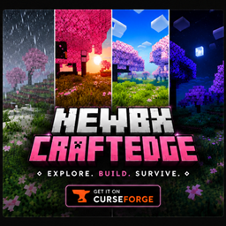
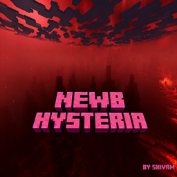
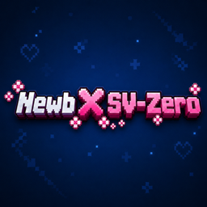
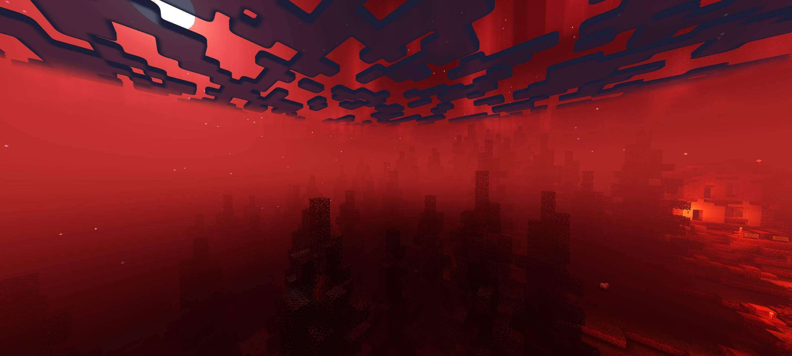
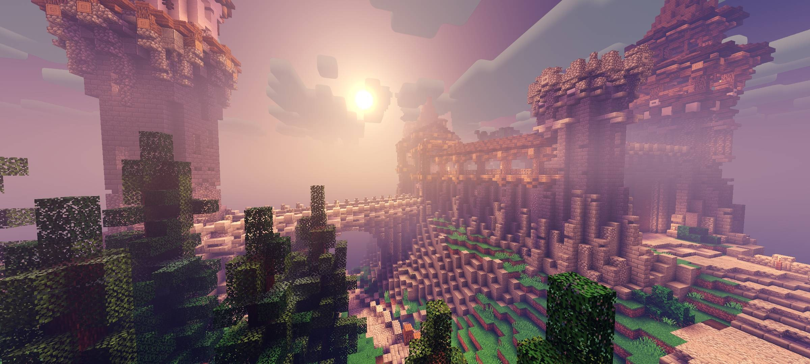
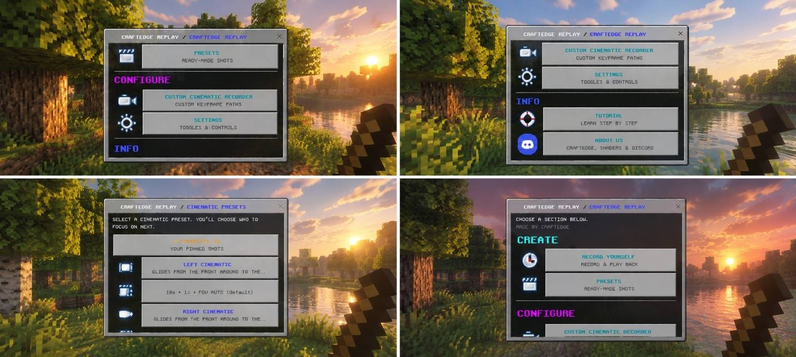

MOST POPULARNewb CraftEdge
Newb x CraftEdge overhauls Bedrock's visuals — denser fog, stronger godrays, reflective wet ground, realistic water with sharp ripples, full sky reflections and sun highlights. 163.9K downloads.
Cinematic fog, godrays and mirror water for Bedrock — plus a camera to film it all. Free, made by players.
Four releases, one studio. Pick your flavour of light.

MOST POPULARNewb x CraftEdge overhauls Bedrock's visuals — denser fog, stronger godrays, reflective wet ground, realistic water with sharp ripples, full sky reflections and sun highlights. 163.9K downloads.

NEW UPDATEDark horror visuals with blood red lighting, deep shadows, scary fog, glowing ores and a blood moon. 2.3K downloads.

A simple, aesthetic, warm and lightweight shader — best visuals at minimal performance cost. 12.5K downloads.
A cinematic replay and camera system for Bedrock — record gameplay and create smooth cinematic shots. 911 downloads.
Release notes and announcements.

21 SEP 2026NewbXHysteria Updated (7.91 MB) is out with support for the latest Bedrock build.
Read more ›
20 SEP 2026The 10.74 MB fixed build brings the new Vivid tonemap, dark nights and End reflections.
Read more ›
11 SEP 2026Our cinematic camera recorder for Bedrock creators is here. Film your world like a trailer.
Read more ›Requires a material / render binary loader — it will not work on official, unmodified Minecraft. Tip from the author: apply under Global Resources (not one world) so fog, water and lighting work everywhere.
Get the .mcpack from the pack's CurseForge page. Never unzip it.
Android: open it with MB Loader — it imports automatically. Windows: install BetterRenderDragon (or Wyvern Loader) first, then import the pack.
Minecraft → Settings → Global Resources → find Newb CraftEdge Shaders → Activate.
Restart Minecraft for all effects — fog, water, lighting — to fully apply.
Newb CraftEdge — 162K+ downloads, every feature. Hysteria is the moodier alternate, SV-Zero the lightweight.
Yes — official word: the pack needs a material / render binary loader and will not work on unmodified Minecraft. Android → MB Loader, Windows → BetterRenderDragon, Linux → materialbinloader.
No — standalone RenderDragon shaders. Keep Vibrants off.
A .mcaddon camera recorder (MC 26.30) for trailers and showcases — pair it with any shader.
Yes, free. Credit “by CraftEdgeProductions” + link the MCPEDL / CurseForge page.
Update pings, support and sneak peeks of the next pack.
… online right now · 142 members